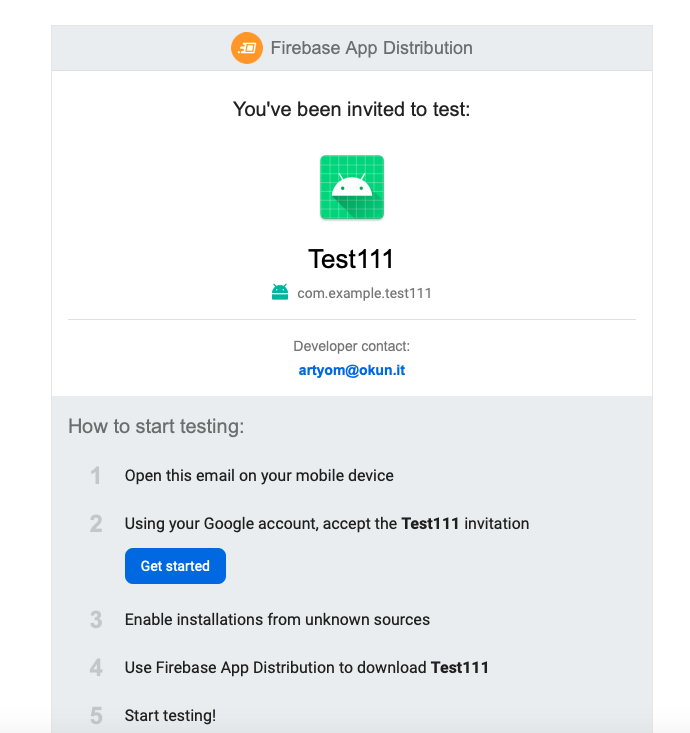

- Create a new application in Android Studio (or use your own previously created one).
- Build and compile a project.
- Create a Github repository for this project(or skip to the step 4 if you already have one). You can follow the instructions here.
- Create first commit (we just want to verify your local copy is synced with Github repo and we can start work on CI/CD, if you have a Github repositore connected to the local project you can skip this step). From the app root folder, open terminal and run:
Note: pay attention to change a path to Github repository in the next script
git add .
git commit -m "Initial commit"
git remote add origin <path to your repository i.e. git@github.com:rtokun/test-111.git>
git push origin master
Congrats! We can start with CI related files now :)
Add workflow file
1. Go to project and create a directory .github in the root.
2. Inside it, create another directory called workflows (This is where all the GitHub Actions configuration files go).
3. Create first configuration file workflow_1.yaml.
4. Open it and add next code (make sure the indentation is exact as in the example, as yaml is sensitive to indentations):
name: "CI Workflow"
on: [push]
jobs:
build:
name: "Build project"
runs-on: ubuntu-latest
steps:
- name: "Checkout current repository in ubuntu's file system"
uses: actions/checkout@v1
- name: "Setup JDK 1.8"
uses: actions/setup-java@v1
with:
java-version: 1.8
- name: "Builds debug build"
run: ./gradlew assembleDebug
5. Commit ang push the changes to origin:
git add .
git commit -m "Initial CI script"
git push origin master
6. Go to your Github repository -> Actions tab.
7. You should see your CI workflow running and after couple of minutes a result: 
First run unit tests locally
1. Go to your test folder.
2. Locate ExampleUnitTest.kt or other test files and validate the test passes locally by running in command line
./gradlew testDebugUnitTest
Modify workflow_1.yaml file:
1. Add to the bottom of your workfow file:
- name: Unit tests
run: ./gradlew testDebugUnitTest
2. Commit and push the changes:
git add .
git commit -m "Add unit test to the workflow"
git push origin master
3. Verify your remote CI build triggers and passes: 
Modify workflow_1.yaml file
1. Change from:./gradlew assembleDebug to ./gradlew assembleRelease.
2. Change from:
./gradlew testDebugUnitTest to ./gradlew testReleaseUnitTest.
3. Commit ang push the changes:
git add .
git commit -m "Convert build to release"
git push origin master
4. You should see your CI workflow running and after couple of minutes a result:
Now we have a remote build, that creates release APK, but it is unsigned 😢.
Create release.keystore file if not exist yet (skip this step if already have one)
- Go to
Android Studio -> Build -> Generate Signed Bundle or APK. - Choose APK and click
Next. - In the
Keystore PathclickCreate new.... - Follow wizard instructions, fill relevant data and remember created keystore location.
- Continue the wizard and build release.apk, just to verify that we are able to build a release version of the app locally.
Modify your app/build.gradle
Add next lines inside android closure:
signingConfigs {
//...
release {
storeFile file('keystore.release')
keyAlias System.getenv("MY_APP_KEY_ALIAS")
storePassword System.getenv("MY_APP_STORE_PASSWORD")
keyPassword System.getenv("MY_APP_KEY_PASSWORD")
}
buildTypes {
release {
// ...
signingConfig signingConfigs.release
// ...
}
}
}
Configure environment variables in the Github Repository
1. Go to the github project repository.
2. Follow the Settings tab.
3. In the Settings tab go to Secrets on the left menu (If you can't see it - maybe you don't have permissions for this project).

4. Now click on the "New Repository Secret" on the right top.
5. Give it a name MY_APP_KEY_ALIAS and a value you entered during keystore wizard and click Add secret:
6. Repeat steps 4-5 for the MY_APP_STORE_PASSWORD and MY_APP_KEY_PASSWORD.
Upload release.keystore to Github secrets
As we can not upload any files to Github secrets besides strings, we are going to convert our release.keystore to base64 string, store it and during the build process we will convert it back to file.
Generate base64 string from release.keystore file
- Open terminal in the folder where the keystore located at.
- Run
base64. - Copy created string from terminal.
Add keystore string to Github secrets (same as we did for the passwords and alias)
- Go to your
Github repository -> Settings -> Secrets. - Create new secret and give it name
ENCODED_KEYSTORE. - Paste previously copied string as secret value and save the secret.
Modify workflow_1.yaml file
1. Add next lines after Setup JDK 1.8 step:
- name: Restore release keystore
run: echo "${{ secrets.ENCODED_KEYSTORE }}" | base64 --decode > keystore.release
2. Also replace current Builds debug build step with:
- name: Generate APK
run: ./gradlew assembleRelease
env:
MY_APP_STORE_PASSWORD: ${{ secrets.MY_APP_STORE_PASSWORD }}
MY_APP_KEY_PASSWORD: ${{ secrets.MY_APP_KEY_PASSWORD }}
MY_APP_KEY_ALIAS: ${{ secrets.MY_APP_KEY_ALIAS }}
3. Commit and push your code and verify remote build passes: 
Now we have a signed release.apk that we can distribute to our testers. Let's see how to do it ih the next step.
In order to distribute the app via Firebase Distribution we need several things:
- Create Firebase project for our application.
- Create Firebase Login token, which will be used for uploading the app to the Firebase.
- Create group of testers which will get the app updates each time it created.
- Use Firebase Github action for actually sending the release APK to the Firebase.
1. Create Firebase project for our app
Note: If you already integrated Firebase to the application and have valid Firebase project + app skip to the step 2
- Go to Firebase console, login and click
Add project. - Follow the wizard instructions and complete project creation.
- In the project overview click
Add app:
- Select
Androidand follow the wizard. Complete the wizard including downloadinggoogle-services.jsonfile, and modifying the gradle files. - Make sure to compile and run the application on the emulator/device after a successful integration.
2. Create Firebase Login token
This token allows to 3rd party applications (in our case, this 3rd party is Github action, which responsible for uploading the app to the Firebase) get an access to the Firebase project and make operations. In order to get one we need to install the Firebase console client on our local computer, login via client to our Firebase account.
1. Open terminal and enter
curl -sL https://firebase.tools | bash
2. After successful installation enter in terminal:
firebase login:ci
It will open browser with Authentication page. Enter your credentials and after succesful authentication go back to your terminal window, you should see there your token:
✔ Success! Use this token to login on a CI server:
1//03UkAUZpVhigPCgYIARAAGsotbjnrtl;ghkjnrts;lhkjntw;lhknrt;lhbknwrtl;khn;wlr0VcRQiYGtZSpo7DP1aS7X5OdCVJys
3. Copy the token, go to your Github repository and add this token as another secret variable with key FIREBASE_TOKEN and value the token itself.
4. Now go to Firebase project -> Settings -> General, scroll down to your application settings and copy App ID.
5. Go to your Github repository and add this id as secret with key FIREBASE_APP_ID.
3. Create group of testers
- Go to Firebase console -> In the memu select
Release and Monitorcategory ->App Distribution. - Click on
Get started->Testers and Groupstab. - Click
Add group, give it a nametestersand add at least one email which will get the app updates.
4. Modify workflow_1.yaml file
Add these lines at the very bottom:
- name: upload artifact to Firebase App Distribution
uses: wzieba/Firebase-Distribution-Github-Action@v1
with:
appId: ${{secrets.FIREBASE_APP_ID}}
token: ${{secrets.FIREBASE_TOKEN}}
groups: testers
file: app/build/outputs/apk/release/app-release.apk
Commit and push your changes. Now you have complete working CI/CD pipeline, and all emails in the testers group we defined will get similar email after each successful build:

To summarize what we have now:
- On each commit and push to the repository, new release build will be created.
- Tests will run.
- If all tests are passing the created APK will be uploaded to Firebase Distribution system.
- All users in
testerswill be notified via email about new app update and will be able to install it.
Great success!